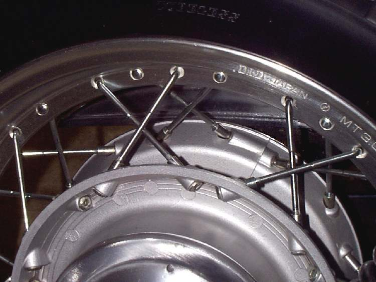

On wire wheels, spokes are thin steel rods that join the hub to the rim. Each spoke screws into a nipple (a long nut) that sits in a hole in the rim. Bikes with cast wheels have no spokes.
What it does
The spokes hold the rim round and in line with the hub. Each one is under tension; together they carry the load. If some spokes get loose, the others take more load, the rim goes out of true, and spokes start to break. Rust, potholes and overloading cause most problems.
Signs it is worn or failing
- A spoke rattles, moves when squeezed, or rings a dull note when tapped: Spokes are loose or broken.
- Rim wobbles: Wheel is buckled or wobbles.
- Repeated punctures from the inside: a spoke end may stick through the nipple.
- Tap each spoke with a spanner: a tight spoke gives a clear ringing note and a loose one a dull sound. Tighten the dull ones until they ring. Spokes on a good wheel do not all sound exactly the same.
When to replace it
Replace any broken, bent or badly rusted spoke and its nipple. If several are broken or the rim is bent, the wheel needs rebuilding. Old spokes are rarely reused in a rebuild.
- One broken spoke is usually not urgent. Two need attention soon if they are apart. Three, or any that are close together, can make the wheel fail suddenly: do not ride.
What to match when buying
- Make, model, year, front or rear, and left or right side: spoke length and head bend angle differ (inner and outer spokes).
- Spoke gauge (thickness) and thread must match the nipple.
- Buy complete spoke sets for a rebuild, made for your hub and rim.
Fitting notes
- Tighten a little at a time, a quarter turn per spoke, around the wheel. Never crank one spoke tight.
- Check runout as you go and grind off any spoke end that sticks past the nipple into the tube side.
- Home job for checking and small adjustments: Check and tighten spokes. Rebuilding and truing a whole wheel needs a truing stand and is best done by a wheel builder.
- Check runout after: Check a wheel for runout.
- Old nipples can seize on the spoke, and stretched threads can lock a spoke and nipple together, so a whole set may have to be cut out. Check a used wheel for spoke condition and trueness before buying it, and plan to fit new bearings.